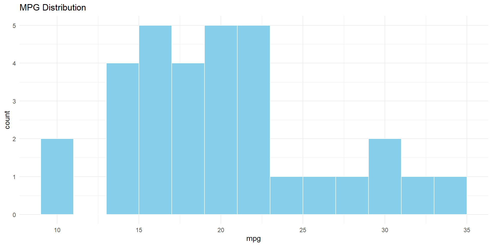

1 + 1[1] 2Data visualisation
Let’s imagine we want two charts side-by-side. In a dashboard, we would use a column structure.
The Code Concept:
## Column 1
(Content for left)
## Column 2
(Content for right)The Visual Result:
Below is a live simulation of how this looks. We have two distinct areas sharing the horizontal space.
library(ggplot2)
ggplot(mtcars, aes(x = mpg)) +
geom_histogram(binwidth = 2, fill = "skyblue", color = "white") +
theme_minimal() +
labs(title = "MPG Distribution")
ggplot(mtcars, aes(x = wt, y = mpg)) +
geom_point(color = "salmon") +
theme_minimal() +
labs(title = "Weight vs MPG")
Sometimes you want to stack items. For example, a large trend line on top, and detailed metrics below.
The Visual Result:
Here we stack two “cards” vertically.
Top Row: Time Series
ggplot(economics, aes(date, unemploy)) +
geom_line(color = "steelblue") +
theme_minimal() +
labs(title = "Unemployment Over Time")
Bottom Row: Summary Stats The average unemployment rate in this dataset is 7771 thousands. We achieved this by typing 7771, but indicated “r” to let quarto know to run the code inline, not just print it out. This helps provide context to the chart above.
When you have too many charts for one screen, Tabsets are your best friend. They allow you to stack multiple visualizations in the same space, letting the user toggle between them.
The Code Concept:
::: {.panel-tabset}
### Chart
(Code for chart)
### Data
(Code for table)
:::The Visual Result:
Try clicking the tabs below!
ggplot(iris, aes(Sepal.Length, Sepal.Width, color = Species)) +
geom_point(size = 3) +
theme_minimal()
head(iris, 10) Sepal.Length Sepal.Width Petal.Length Petal.Width Species
1 5.1 3.5 1.4 0.2 setosa
2 4.9 3.0 1.4 0.2 setosa
3 4.7 3.2 1.3 0.2 setosa
4 4.6 3.1 1.5 0.2 setosa
5 5.0 3.6 1.4 0.2 setosa
6 5.4 3.9 1.7 0.4 setosa
7 4.6 3.4 1.4 0.3 setosa
8 5.0 3.4 1.5 0.2 setosa
9 4.4 2.9 1.4 0.2 setosa
10 4.9 3.1 1.5 0.1 setosaLet’s simulate a full dashboard page right here on this slide. Imagine this is your screen. We have a sidebar for context and a main area for charts.
Status: On Track
This dashboard tracks the performance of Project Alpha.
Use the tabs on the right to explore the data.
Key Metrics: - N: 150 - Mean: 5.8
ggplot(airquality, aes(Day, Temp)) +
geom_line(color = "darkgreen") +
geom_smooth(se=FALSE, color="lightgreen") +
theme_minimal()
ggplot(airquality, aes(Temp)) +
geom_histogram(fill = "darkgreen", alpha=0.7) +
theme_minimal()